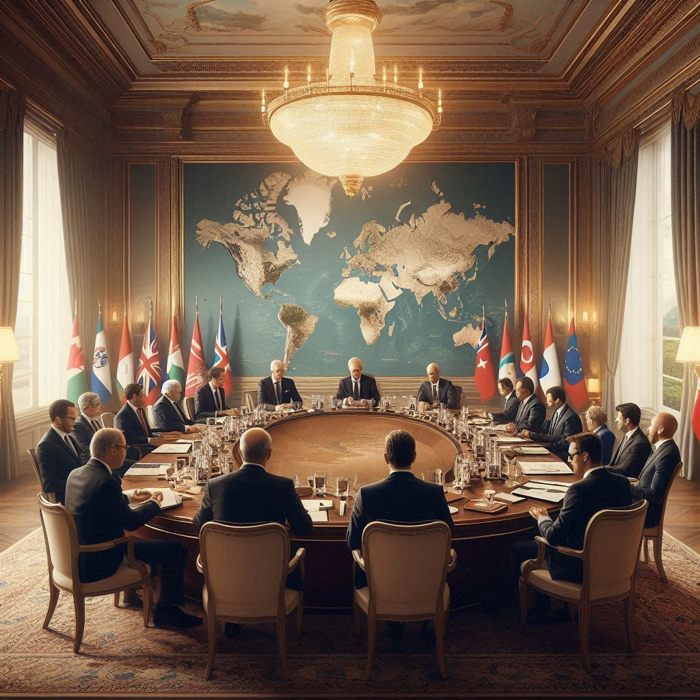
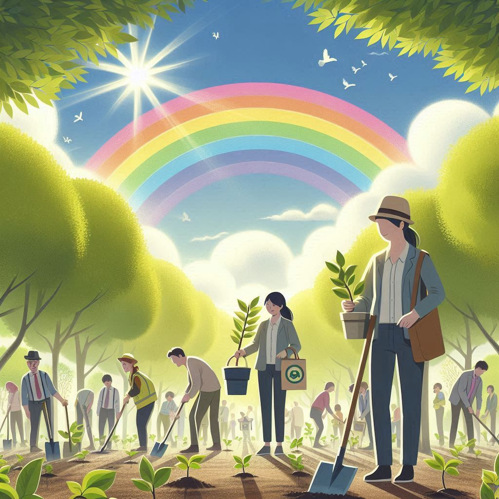
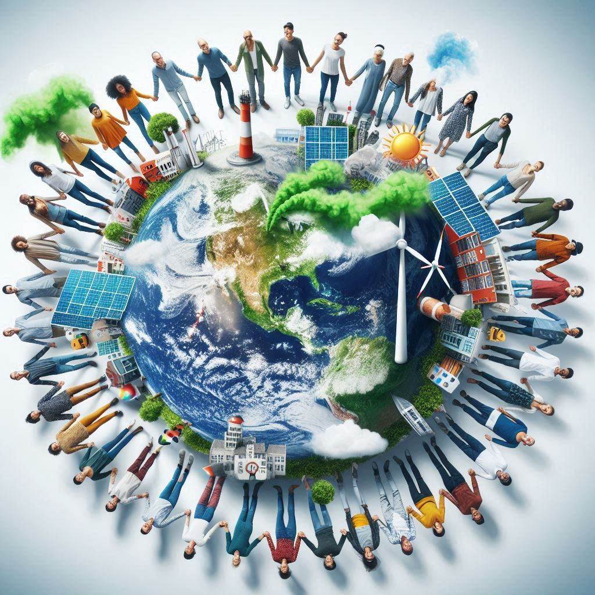
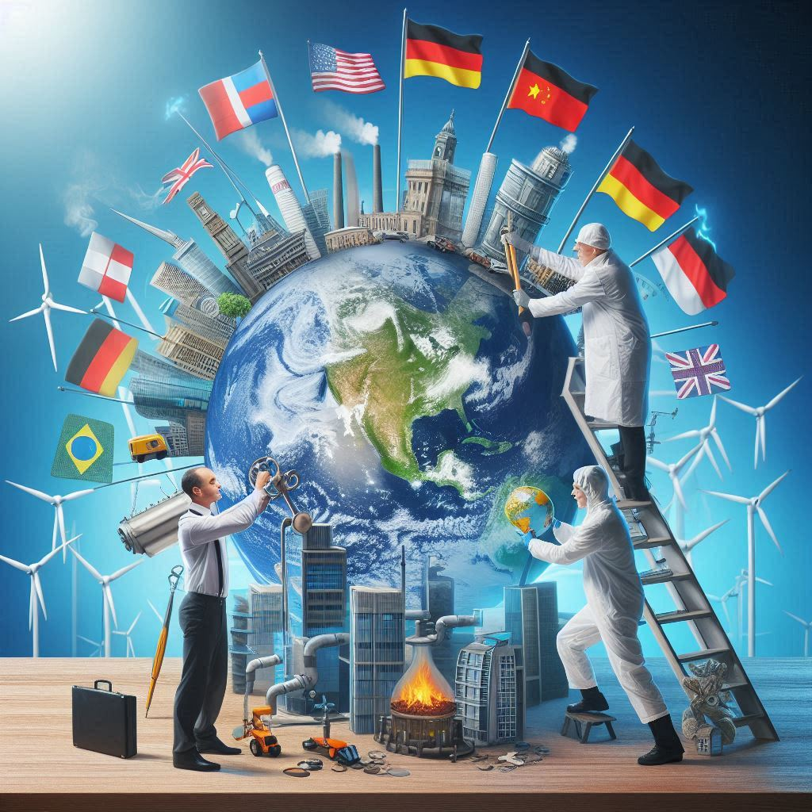

¿Qué es la Enmienda de Doha?
La Enmienda de Doha es una modificación esencial del Protocolo de Kioto, adoptada el 8 de diciembre de 2012 durante la 18.ª Conferencia de las Partes (COP18) en Doha, Catar. Este acuerdo tiene como objetivo fortalecer el compromiso global para mitigar el cambio climático a través de un segundo periodo de compromisos que se extiende desde el 1 de enero de 2013 hasta el 31 de diciembre de 2020.
La enmienda busca obligar a los países desarrollados a reducir sus emisiones de gases de efecto invernadero (GEI) y a abordar nuevas fuentes de contaminación, reconociendo la importancia de una acción climática continua en un contexto de crisis ambiental creciente.

Objetivos Claros de Reducción
Uno de los principales objetivos de la Enmienda de Doha es establecer metas más ambiciosas para la reducción de emisiones de los países desarrollados. Estos objetivos están diseñados para alinearse con las recomendaciones científicas sobre la reducción necesaria de GEI para limitar el aumento de la temperatura global a 2 °C por encima de los niveles preindustriales, un umbral considerado crítico para evitar los peores efectos del cambio climático.

Inclusión de Nuevos Gases
La Enmienda también amplía el alcance del Protocolo de Kioto al incluir nuevos gases de efecto invernadero, como los hidrofluorocarbonos (HFCs) y los perfluorocarbonos (PFCs). Esto es crucial, ya que estos gases tienen un potencial de calentamiento global mucho más alto que el dióxido de carbono, lo que significa que su regulación es vital para lograr los objetivos climáticos globales.

Justicia Climática y Responsabilidades Diferenciadas
Además, la enmienda reconoce la importancia de la justicia climática, subrayando que los países desarrollados, que son responsables de una gran parte de las emisiones históricas, deben liderar los esfuerzos de mitigación y proporcionar apoyo técnico y financiero a los países en desarrollo. Este enfoque busca asegurar que todos los países puedan participar de manera equitativa en la lucha contra el cambio climático.
A pesar de los desafíos que enfrenta, como la falta de participación de ciertos grandes emisores, la Enmienda de Doha representa un esfuerzo significativo por mantener el compromiso internacional ante una crisis climática que continúa intensificándose.
